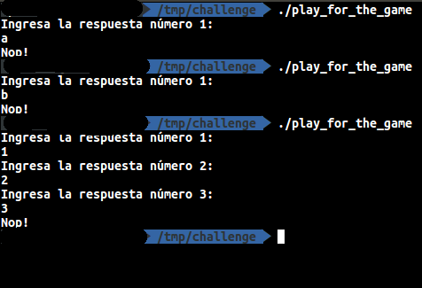

Kidnapped
- Category: Miscellaneous
- Points: 500/500
Enunciado
Parece un chiste.. El año pasado me hicieron lo mismo. Me queda tiempo hasta el 28 de septiembre para entregar un trabajo de la misma materia (que recursé ya que nadie pudo ayudarme el año pasado) "Programación en assembler". Ya estoy empezando a sospechar que alguno de ustedes me quiere hacer pasar muchos malos momentos.
En fin.. me pasó algo muy parecido al año pasado. Había terminado con el trabajo, estaba por hacer un backup, cuando de repente.. mi pc se volvió loca. Aparecieron archivos, archivos mios se borraron, ahora hay archivos con extensiones ".enc" ... no entiendo nada.
Por favor, dame una mano con esto. Necesito de una vez por todas terminar esta materia. El que me hizo esto, me dejó una nota.. Capaz eso les ayuda? Les dejo un pedazo (fijense que pesa solo 15 MB, osea no trabajen sobre esa imagen porque se van a quedar sin lugar) de mi disco. Espero que les sirva de algo. Gracias
File
Parte 1: Desencriptando files
El challenge simplemente provee una imagen de un disco. Por lo tanto, montemos esta imagen:
sudo mount -o rw file.img /mnt/challenge
Ejecutemos un ls -R para ver que files interesantes tenemos:

Parece ser un home directory de alguna distribución de Linux. Además, de las carpetas por defecto, parece ser que sólo 3 files son interesantes:
- play_for_the_key.enc
- tarea_secuestrada.asm.zip.enc
- nota
La nota, dice:
No es fácil terminar esta materia... te habrás dado cuenta.. pensaste que como ya te había pasado el año pasado este año no te iba a volver a pasar? jaj, pobre.
Consejo de amigos... aprendé un poco más a proteger tu pc...
El año pasado te ayudé bastante.. este año.. estas solito.. solo un consejo te voy a dar si queres volver a obtener tu tarea:
"Hay veces, que romper es mucho más dificil que aprender a jugar".
Espero que sepas darte cuenta cuando haya que aplicar este principio.
Mucha suerte..
Ah, casi me olvidaba, te volví a modificar un poco tu tarea asique.. vas a tener que arreglarla otra vez..
Saludos
Lo único interesante acá parece ser la frase: "Hay veces, que romper es mucho más dificil que aprender a jugar".
Igulamente por ahora, no parece ser útil.
Usando el comando ls, no vamos a listar los archivos ocultos. Si usamos el flag "-a" vamos a encontrar en el home, un file bastante interesante, el bash_history con el siguiente contenido:
whoami
cd Desktop/
ls
cat /etc/passwd
sudo su -
cd /home/
su - eldiegomaradona
su - elcharliedelapeople
crontab -e
cd /home/alumno/
cd facu/
cd programacion_assembler/
cd tarea_final/
vim play_for_key.c
movcc play_for_key -o play_for_key
vim simd.asm
zip -er tarea_secuestrada.asm.zip simd.asm
rm -rf simd.asm play_for_key.c
openssl enc -aes-256-cbc -in tarea_secuestrada.asm.zip -out tarea_secuestrada.asm.zip.enc
openssl enc -aes-256-cbc -in play_for_key -out play_for_key.enc
rm -rf play_for_key
rm -rf tarea_secuestrada.asm.zip
vim nota
cd ~
rm .bash*
logout
Por lo que vemos, el atacante:
- Trató de loguearse con algunos usuarios.
- Abrió el file de configuración de los crons, habrá modificado algo? (no tenemos nada para confirmarlo).
- Creó/editó un file llamado play_for_key.c (vim play_for_the_key.c).
- Lo compilo? Con algo raro? (movcc play_for_key -o play_for_key).
- Creó/editó un file llamado simd.asm, será la tarea? (vim simd.asm) .
- Zipea el file con password, y acá podemos confirmar que es la tarea (zip -er tarea_secuestrada.asm.zip simd.asm).
- Elimina los files con código fuente (rm -rf simd.asm play_for_key.c).
- Encripta ambos files, sin proporcionar password! (ambas lineas de openssl)
- Elimina dicho files, es decir, sólo deja los encriptados (ambas lineas de rm)
- Elimina todo los files que comiencen con .bash (rm .bash)
Si tratamos de desencriptar los files de extensión .enc, no vamos a poder ya que nos pide una password. Dado que en los comandos para encriptar los files no se utilizó el flag "-k", para especificar la password en el comando propiamente, entonces podemos asumir que la password fue ingresada en modo interactivo, y por lo tanto no va a haber registro de ella.
Una de las posibilidades acá seria tratar de bruteforcear la password... Pero en general, al menos desde mi punto de vista, yo haría esto cuando se me acaban las opciones.
En este caso, podemos ver que se borraron varios archivos. Por lo tanto, podríamos usar alguna suite de forensia con el objetivo de recuperar los files eliminados, como por ejemplo, photorec.
Con photorec, se puede recuperar al menos un archivo. Ese archivo, parece ser el .bashrc del usuario, y entre sus líneas, tiene lo siguiente:
# enable some nice features
openssl(){
ba=$4
/usr/bin/openssl $1 $2 $3 $4 $5 $6 -k $(for i in {1..100}; do echo -n ${#ba}; done)
}
Esto quiere decir que, basicamente, el atacante creó un alias con el mismo nombre que el comando openssl, redefiniendo su acción. En resumen, lo que esta haciendo eso, es agregar la password de encripción con el flag "-k" cada vez que se llama al comando openssl. Dicha password es la longitud del nombre del file pasado por parámetro, repetido 100 veces. La longitud del string play_for_the_key es 16 y de tarea_secuestrada.asm.zip es 25. Por lo tanto, los siguientes comandos, vamos a poder desencriptar ambos files:
/usr/bin/openssl enc -d -aes-256-cbc -in tarea_secuestrada.asm.zip.enc -out tarea_secuestrada.asm.zip -k 25252525252525252525252525252525252525252525252525252525252525252525252525252525252525252525252525252525252525252525252525252525252525252525252525252525252525252525252525252525252525252525252525252525
/usr/bin/openssl enc -d -aes-256-cbc -in play_for_the_key.enc -out play_for_the_key -k 16161616161616161616161616161616161616161616161616161616161616161616161616161616161616161616161616161616161616161616161616161616161616161616161616161616161616161616161616161616161616161616161616161616
Tener que la salida de estos comandos debería ser almacenada afuera del disco, ya que sólo tiene 15 MB
Parte 2: Jugar, a veces es más facil
En este momento tenemos 2 files imporatantes: * play_for_the_key: Un binario de 32 bits. Que cuando lo ejecutamos parece que nos pide respuestas a unas "preguntas". * tarea_secuestrada.zip: Un archivo ZIP con password.
En este momento uno podría tratar de bruteforcear la password del ZIP quizás usando JTR o Hashcat o cualquier otra tool para crackear password de un ZIP. Pero, dado que existe un binario con un nombre bastante claro, se puede intuir que el camino al menos lógico, sería tratar de conseguir la key usando dicho binario.
Play for the key
Cuando ejecutamos el binario, el siguiente mensaje aparece:
Ingresa la respuesta número 1:
A esta altura no tenemos ni idea que significa esto. Si empezamos a probar y fallamos, el mensaje "Nop!" se imprimirá en la pantalla. En cambio, si ponemos la respuesta correcta, nos pedirá la respuesta a la siguiente pregunta:

Pero ¿Cómo sabemos cuantas pregunta son? ¿Cuál es la repuesta correcta?
Una opción válida en este momento sería tratar de reversear el binario y ver qué está haciendo. Para este ejemplo, voy a usar Binary Ninja. Sin embargo, cuando vamos a ver el graph view del binario, vemos algo bastante extraño.. Solo existe un basic block. Si seguimos mirando, vamos a notar que sólo hay instrucciones MOV:
¿Qué está pasando?. Si volvemos atrás un poco y revisamos otra vez el bash_history vamos a darnos cuenta que este binario fue compilado usando un comando llamado movcc. El primer resultado de la búsqueda de dicho comando en Google, nos lleva a un github de una tool llamada movfuscator. Según su documentación, esta compila un código fuente en un binario de sólo instrucciones MOV. Si bien desde un punto de performance y hasta de espacio que ocupa dicho binario, es bastante malo, al estar escrito sólo con instrucciones MOV el reversing de este binario se vuelve muchisimo más tedioso.
Y aquí se abren dos caminos: 1. Encontramos una tool para de-movfuscar el binario. 2. Hacemos uso del msj de la nota, y JUGAMOS en vez de tratar de romper el juego.
Vamos a ir por la opción 2:
Luego de probar un poco con algunos valores que ingresamos como respuestas, vamos a notar que: 1. Para 1, la respuesta es 1. 2. Para 2, la respuesta es 2. 3. Para 3, la respuesta es 1. 4. Para 4, la respuesta es 1. 5. Para 5, la respuesta es 2. 6. Para 6, la respuesta es 1. 7. Para 7, la respuesta es 2. 8. Para 8, la respuesta es 1. 9. Para 9, la respuesta es 2. 10. Para 10, la respuesta es 3. 11. Para 11, la respuesta es 4. 12. Para 12, la respuesta es 1.
Si observamos con detalle, podemos ver que el la respuesta es un numero que empieza a aumentar pero en ciertos valores vuelve a uno. Dichos valores son: 2, 3, 5, 7, 11, etc.
Es decir, parece ser un contador que cuando el número de la pregunta es uno de esos, el contador se resetea y vuelve a empezar de 1.
Pero ¿Qué tienen de común estos números? SON PRIMOS!!
Todavía no sabemos qué cantidad de preguntas hay, pero igualmente, podemos hacer un script que imprima un contador y que cada vez que se cruza con un número primo, vuelva a 1. Dado que no sabemos la cantidad, podemos ir probando hasta que la encontremos. Yo arranqué con 15, y faltaban mas. Mi siguiente paso fue probar con 1000, y funcionó. La cantidad de preguntas finalmente eran 100.
Solucionador
primos = []
contador = 1
numero_de_pregunta = 1
posible_numero_de_preguntas = 1000
for numero_de_pregunta in xrange(1,posible_numero_de_preguntas):
print contador
if any((numero_de_pregunta % primo) == 0 for primo in primos) or numero_de_pregunta == 1:
contador += 1
else:
contador = 1
primos.append(numero_de_pregunta)
Intento con 15 primos
Intento con 1000 primos
Si intentamos descomprimir el ZIP con esa clave, vamos a obtener un último file simd.asm, que es la última parte del challenge.
Parte 3: Programación en assembler
La última parte del challenge implica tratar de entender qué hizo el atacante (qué modificó) para poder volver hacer que funcione otra vez.
El file original contiene:
nasm -f elf64 simd.asm; ld -o simd simd.o
section .text
global _start
_start:
movdqu xmm1, [Parallel_processing]
movdqu xmm3, [is_much_faster...You_know?]
movdqu xmm5, [but_sometimes_is_difficult]
movdqu xmm7, [to_understand_how_it_works.]
movdqu xmm10, [Anyways_I_trust_you...]
movdqu xmm2, xmm1
movdqu xmm4, xmm3
movdqu xmm6, xmm5
movdqu xmm8, xmm7
movdqu xmm11, xmm10
pxor xmm9, xmm9
punpckhwd xmm1, xmm9
punpckhwd xmm2, xmm9
punpcklwd xmm3, xmm9
punpckhwd xmm4, xmm9
punpcklwd xmm5, xmm9
punpcklwd xmm6, xmm9
punpcklwd xmm7, xmm9
punpckhwd xmm8, xmm9
punpcklwd xmm10, xmm9
punpckhwd xmm9 ,xmm11
psubw xmm1, xmm10
psubw xmm2, xmm11
psubw xmm3, xmm10
psubw xmm4, xmm11
psubw xmm5, xmm10
psubw xmm6, xmm11
psubw xmm7, xmm10
psubw xmm8, xmm11
packuswb xmm1, xmm2
packuswb xmm3, xmm4
packuswb xmm5, xmm6
packuswb xmm7, xmm8
movdqu [Parallel_processing], xmm1
movdqu [is_much_faster...You_know?], xmm3
movdqu [but_sometimes_is_difficult], xmm5
movdqu [to_understand_how_it_works.], xmm7
mov ecx, Parallel_processing
mov edx, 0x40
mov ebx,1
mov eax,4
int 0x80
mov eax,1
int 0x80
section .data
Parallel_processing dq 0x7e7618131b332312, 0xb5db2d5e4333690e
is_much_faster...You_know? dq 0x487bdfe02d301eee, 0x9db0232038f9321e
but_sometimes_is_difficult dq 0x4a47dbdf5e07f2f5, 0x6caaef1f3ef1312f
to_understand_how_it_works. dq 0x5078dd0e61071ff0, 0x5a9adf0f28e0206b
Anyways_I_trust_you... dq 0x1715ABADFACEBABE
Whats_wrong_in_this_code? dq 0x3A7ABEEF08C0FFEE
Lo más imporante acá es entender qué está haciendo este código, al menos una idea a alto nivel para después ahondar en cada detalle. Dividamos el código en partes:
Análisis de código - Parte 1
movdqu xmm1, [Parallel_processing]
movdqu xmm3, [is_much_faster...You_know?]
movdqu xmm5, [but_sometimes_is_difficult]
movdqu xmm7, [to_understand_how_it_works.]
movdqu xmm10, [Anyways_I_trust_you...]
movdqu xmm2, xmm1
movdqu xmm4, xmm3
movdqu xmm6, xmm5
movdqu xmm8, xmm7
movdqu xmm11, xmm10
pxor xmm9, xmm9
En esta parte, simplemente está copiando el contenido de las etiquetas a los registros XMM (16 bytes). Luego, hace una de cada una de ellos, dejando el mismo contenido de a pares. Es decir, xmm1 tiene el mismo valor que xmm2, xmm3 el mismo que xmm4, etc.. Por último, xmm9 lo pone en 0.
Análisis de código - Parte 2
punpckhwd xmm1, xmm9
punpckhwd xmm2, xmm9
punpcklwd xmm3, xmm9
punpckhwd xmm4, xmm9
punpcklwd xmm5, xmm9
punpcklwd xmm6, xmm9
punpcklwd xmm7, xmm9
punpckhwd xmm8, xmm9
punpcklwd xmm10, xmm9
punpckhwd xmm9 ,xmm11
En esta segunda parte, se puede observar dos instrucciones distintas: * punpckhwd * punpcklwd
Éstas, son parte de un conjunto de instrucciones (SSE) usados para procesamiento paralelo. Googleando un poco, se puede encontrar que la función punpckhwd divide los registros, tanto fuente como destino, en words (2 bytes) (por eso la ante última letra, w). Toma las words que están en la parte high (por eso la letra h antes de la w) de ambos registros, y los intercala.
Lo imporante de esta parte, no es tanto entrar en detalle de cómo es que se intercalan estrictamente, sino más que nada entender que:
- Se está unpackeando words
- Se está unpackeando o bien la parte high, o bien la parte low.
- Casi todas ellas se están unpackeando con 0 (xmm9 es 0).
Si recordamos lo que se hizo en la primera parte, había pares de registros xmm que tenian el mismo valor. Si bien vemos casos en la parte 2, donde se está unpackeando la parte high y low de un mismo valor de registros (por ejemplo, para xmm3 y xmm4), también vemos casos donde se hace dos veces la parte high (xmm1 y xmm2). Raro..
Además, vemos que la última intrucción, parece unpackear al revés, es decir, usando el xmm9 como registro fuente y no como destino. Otra cosa para anotar.
Análisis de código - Parte 3
psubw xmm1, xmm10
psubw xmm2, xmm11
psubw xmm3, xmm10
psubw xmm4, xmm11
psubw xmm5, xmm10
psubw xmm6, xmm11
psubw xmm7, xmm10
psubw xmm8, xmm11
Otra instrucción del mismo set de procesamiento paralelo. En este caso esta instrucción hace una resta word a word de cada registro y almacena el resultado en el registro destino.
Obsevado este pedazo de código, se puede intuir que ni xmm11 ni xmm10 son usados dos veces con el mismo par de registros. Es decir, todo par de registros usa una vez xmm10 y una vez xmm11. De hecho, por el orden y lo números de regitros, podríamos llegar a pensar que xmm10 es siempre usado para la parte low de los pares de registros y xmm11 para la parte high.
Análisis de código - Parte 4
packuswb xmm1, xmm2
packuswb xmm3, xmm4
packuswb xmm5, xmm6
packuswb xmm7, xmm8
Por último, en esta parte, se hace el packeo otra vez para volver a la "normalidad". Cada par de registros, se packean juntos. Sin embargo, dicho packeo, se hace de word a byte (por eso wb a lo último) cuando el unpackeo se hizo de word a double word... raro..
Análisis de código - Parte 5
movdqu [Parallel_processing], xmm1
movdqu [is_much_faster...You_know?], xmm3
movdqu [but_sometimes_is_difficult], xmm5
movdqu [to_understand_how_it_works.], xmm7
Se escribe dichas posiciones de memoria el valor que tienen algunos (los representantes de cada par?) de los xmm después de hacer las operaciones.
Análisis de código - Parte 6
mov ecx, Parallel_processing
mov edx, 0x40
mov ebx,1
mov eax,4
int 0x80
mov eax,1
int 0x80
Finalmente, imprime por pantalla los 64 bytes que tenga la posición de memoria apuntada por la etiqueta Parallel_processing.
Análisis de código - Resumen
Hay al menos 3 cosas que parecen raras:
- En el momemto de unpackear, hay algunos pares de registros que se unpackea la misma parte (high o low).
- En una instrucción de unpackeo, se usa el xmm9 como registro destino (no consistente con todo lo anterior).
- En el momento de packear, si bien se había unpackeado de word a double word, se packea de word a byte.
Al ser un ejercicio de "patching", no queda otra que ir probando los cambios a ver como afectan. Igualmente, así como fuimos intuyendo a lo largo del texto, podríamos hacer los cambios para lógicos:
- Cada par deberia unpackear la parte low y la parte high. Cómo saber cual debería, podríamos probar. Sin embargo, por cómo está escrito el código, vamos a optar por unpackear la parte low con el registro de numero más bajo entre los pares (es decir, entre xmm1 y xmm2, usaremos xmm1) y el de número más alto para la parte high:
punpcklwd xmm1, xmm9
punpckhwd xmm2, xmm9
punpcklwd xmm3, xmm9
punpckhwd xmm4, xmm9
punpcklwd xmm5, xmm9
punpckhwd xmm6, xmm9
punpcklwd xmm7, xmm9
punpckhwd xmm8, xmm9
punpcklwd xmm10, xmm9
punpckhwd xmm11, xmm9
- xmm9 no tiene mucho sentido ponerlo adelante, además de que parece inconsistente con todas las otras, por lo tanto, cambiemos el orden. y dejemos que la instrucción sea:
punpckhwd xmm11, xmm9
- Probemos. Packemos de double word a word, usando la instrucción packusdw:
packusdw xmm1, xmm2
packusdw xmm3, xmm4
packusdw xmm5, xmm6
packusdw xmm7, xmm8
Es decir, que finalmente, el nuevo código sería:
; nasm -f elf64 simd.asm; ld -o simd simd.o
section .text
global _start
_start:
movdqu xmm1, [Parallel_processing]
movdqu xmm3, [is_much_faster...You_know?]
movdqu xmm5, [but_sometimes_is_difficult]
movdqu xmm7, [to_understand_how_it_works.]
movdqu xmm10, [Anyways_I_trust_you...]
movdqu xmm2, xmm1
movdqu xmm4, xmm3
movdqu xmm6, xmm5
movdqu xmm8, xmm7
movdqu xmm11, xmm10
pxor xmm9, xmm9
punpcklwd xmm1, xmm9
punpckhwd xmm2, xmm9
punpcklwd xmm3, xmm9
punpckhwd xmm4, xmm9
punpcklwd xmm5, xmm9
punpckhwd xmm6, xmm9
punpcklwd xmm7, xmm9
punpckhwd xmm8, xmm9
punpcklwd xmm10, xmm9
punpckhwd xmm11, xmm9
psubw xmm1, xmm10
psubw xmm2, xmm11
psubw xmm3, xmm10
psubw xmm4, xmm11
psubw xmm5, xmm10
psubw xmm6, xmm11
psubw xmm7, xmm10
psubw xmm8, xmm11
packusdw xmm1, xmm2
packusdw xmm3, xmm4
packusdw xmm5, xmm6
packusdw xmm7, xmm8
movdqu [Parallel_processing], xmm1
movdqu [is_much_faster...You_know?], xmm3
movdqu [but_sometimes_is_difficult], xmm5
movdqu [to_understand_how_it_works.], xmm7
mov ecx, Parallel_processing
mov edx, 0x40
mov ebx,1
mov eax,4
int 0x80
mov eax,1
int 0x80
section .data
Parallel_processing dq 0x7e7618131b332312, 0xb5db2d5e4333690e
is_much_faster...You_know? dq 0x487bdfe02d301eee, 0x9db0232038f9321e
but_sometimes_is_difficult dq 0x4a47dbdf5e07f2f5, 0x6caaef1f3ef1312f
to_understand_how_it_works. dq 0x5078dd0e61071ff0, 0x5a9adf0f28e0206b
Anyways_I_trust_you... dq 0x1715ABADFACEBABE
Whats_wrong_in_this_code? dq 0x3A7ABEEF08C0FFEE
Si compilamos este programa y lo corremos, obtendremos el flag:
The flag is:ona{0db234f102901d6c789c2023A11600022e9fa1c9}